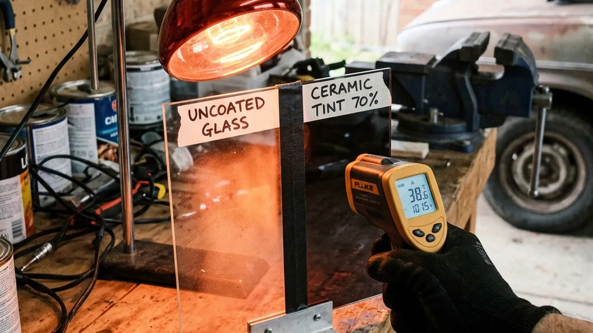

Living in the Inland Empire means dealing with extreme heat for a solid eight months of the year. Standard window tints just don't cut it when it's 105 degrees outside. If you want true heat rejection, you need the absolute best. And in the world of professional car window tinting, that means one thing: LLumar ceramic window tint.
LLumar has established itself as the gold standard in the industry. But what makes it so special compared to a standard, run-of-the-mill film? It all comes down to nano-ceramic technology.
The Science Behind LLumar Ceramic Tint
Unlike traditional dyed films that simply darken the glass, LLumar ceramic tint is packed with microscopic, non-conductive ceramic particles. These particles are engineered to absorb and reflect infrared heat. This means your car's interior stays significantly cooler, even when parked in direct Riverside sunlight.
Because it doesn't rely on dark dyes, you can actually get a lighter shade of quality auto glass tint and still receive maximum heat rejection. This is perfect for those who want a cooler car without sacrificing nighttime visibility or drawing unwanted attention.

Long-Term Durability and Signal Clarity
Some metallized films block heat well, but they interfere with your GPS, cell phone signals, and toll passes. LLumar ceramic window tint contains absolutely no metal. It offers zero signal interference. You get crystal-clear connectivity alongside unmatched heat rejection.
Furthermore, LLumar films are incredibly durable. As a premier provider of professional car window tinting, we see firsthand how LLumar films resist scratching, fading, and bubbling over years of abuse. The film is guaranteed color-stable. It will never turn that ugly, cheap purple color.
When you demand the best for your vehicle, don't settle for less. LLumar ceramic is an investment in your comfort, your car's interior longevity, and your skin's health. Visit Riverside Tints to experience the LLumar difference today.